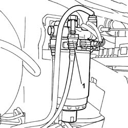
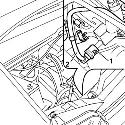

1040B58 FUEL RETURN LINE FROM INJECTION PUMP TO FILTER - R R
- Path
- Procedures > 10 ENGINE UNIT > 1040 FUEL TANK AND PIPES > 1040B FUEL SUPPLY/RETURN CIRCUIT PIPE > 1040B58 FUEL RETURN LINE FROM INJECTION PUMP TO FILTER - R R
- Kind
- repair procedure (removal / refitting; the operation number is the code)
- Applies to
- engines: 2.8 JTD 8V; all production periods
- Interactive page
- https://sloeber94.github.io/elrnDB-fDct/en/#/244000750
Applies to: engines: 2.8 JTD 8V; all production periods
 Removing
Removing
 Refitting
Refitting- Disconnect the negative battery terminal.
See in Op. 1048A10
See in Op. 1048B14
1. Disconnect the rapid connector from the fuel filter.

Applies to: engines: 2.8 JTD 8V; all production periods
1. Disconnect the rapid connector from the fuel return manifold.
2. Remove the pipe and release it from the fastening spring.

Applies to: engines: 2.8 JTD 8V; all production periods
Refitting
Removing- Connect the rapid connector to the fuel return manifold.
- Secure the pipe to the retaining springs.
- Connect the rapid connector to the fuel filter.
See in Op. 1048B14
See in Op. 1048A10
- Connect the negative battery terminal.